十字绣
#1 十字绣 作者：蓝天蓝 发表时间：2011-8-17 21:16:37
十字绣
绣十字绣我想对大家来说，并不是很难，难的是细心和坚持，有很多朋友都说一个小小的钱包，小小的装身份证的一个袋子，绣了一年了还没有绣完呢，绣了几针 就够了，就不想绣了，这样是永远也不行的，就是事情再小，你不去做，也完成不了的。干什么事情我们都要有坚持的精神。
十字绣《花开富贵》介绍：
品名：-Z219六尺牡丹
规格：11CT 200cm X 94cm
纯100%进口埃及及长绒棉
中格布3股线绣，2股线勾边
历经9个月于今天早上终于完成了，全图如下
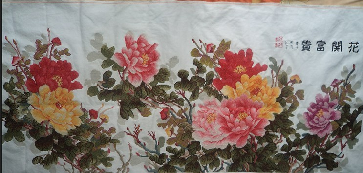
全图照得有点小，看不出是绣好以后的，下面是分图：
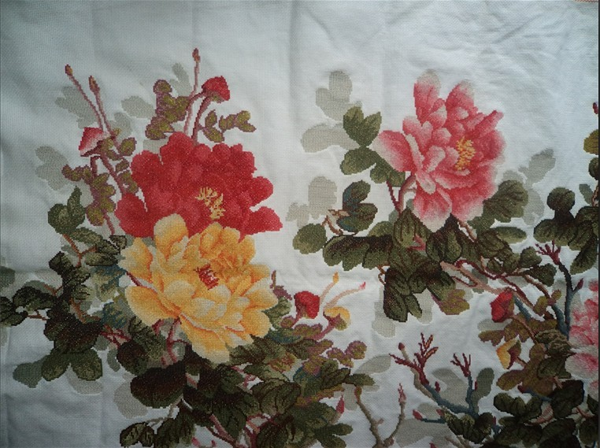
左边
右边
下面 的是其中选的一小部分：
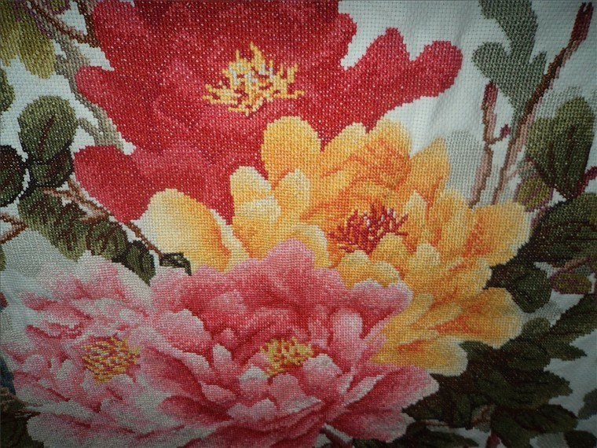
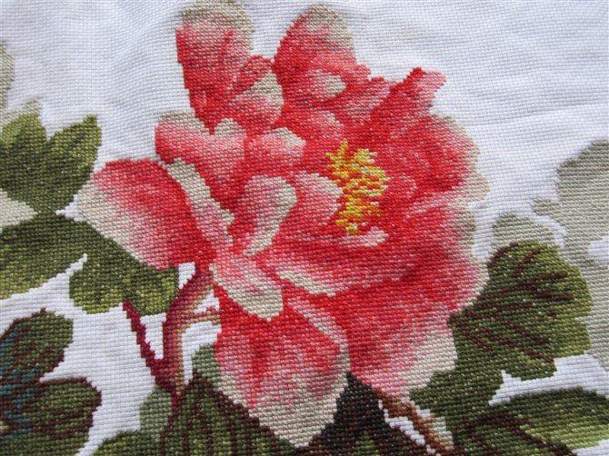
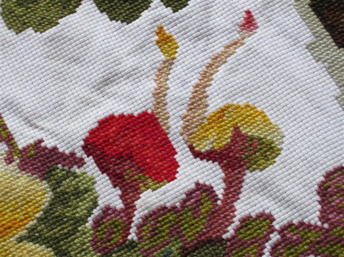
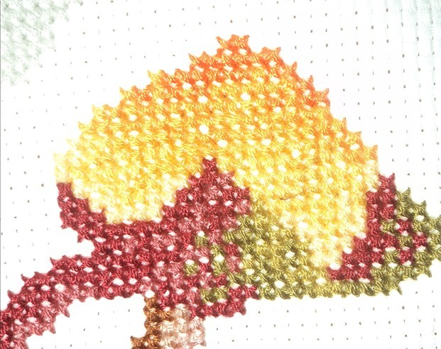
下面发一下其中一朵花的刺绣过程 如图
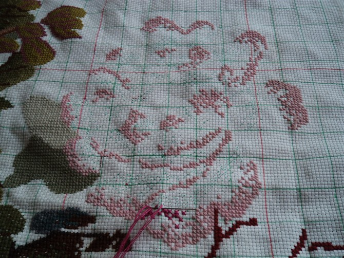
1
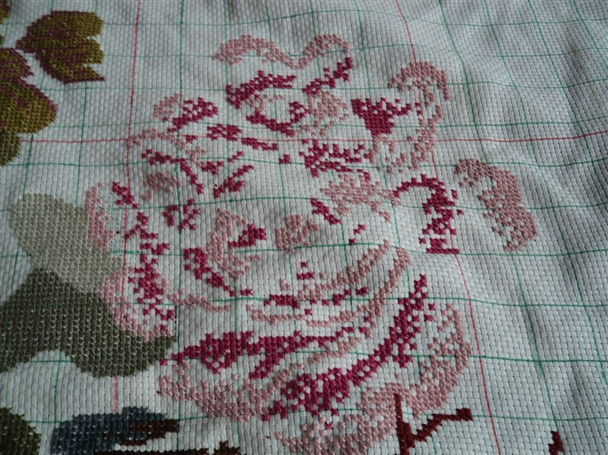
2
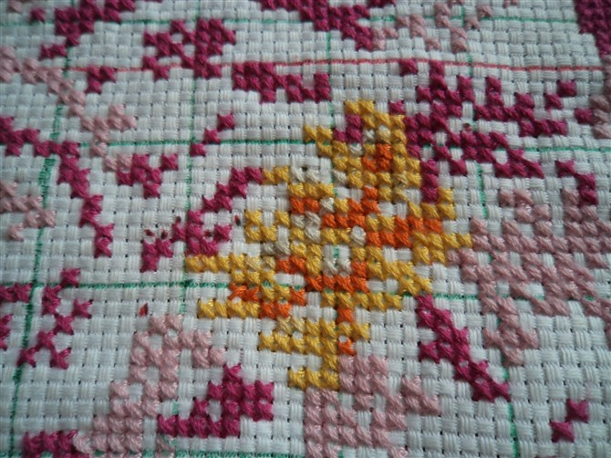
3
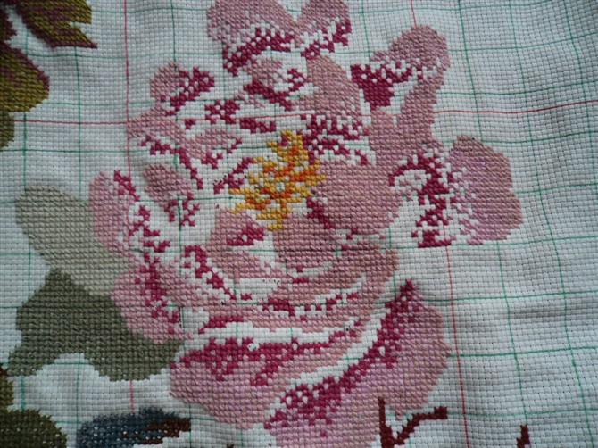
4
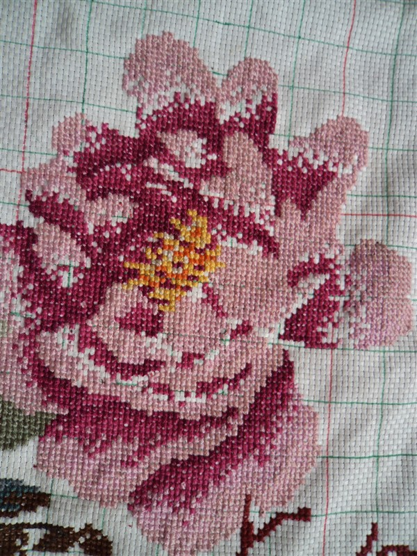
5
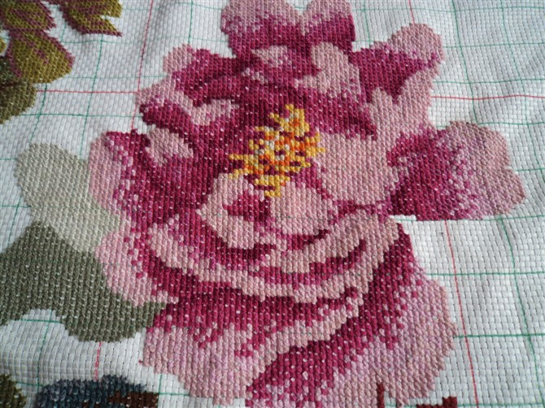
6完成
［此帖子已被 蓝天蓝 在 2011-8-17 21:26:36 编辑过］
［ 蓝色★眼泪 于 2011-8-18 9:14:55 时花20金币送鲜花一朵］
［ 飞翔 于 2011-8-19 20:29:08 时花20金币送鲜花一朵］
#2 Re:十字绣 作者：蓝天蓝 发表时间：2011-8-17 21:17:29
示意图：
十字绣《花开富贵》介绍：
品名：-Z219六尺牡丹
规格：11CT 200cm X 94cm
纯100%进口埃及及长绒棉
中格布3股线绣，2股线勾边
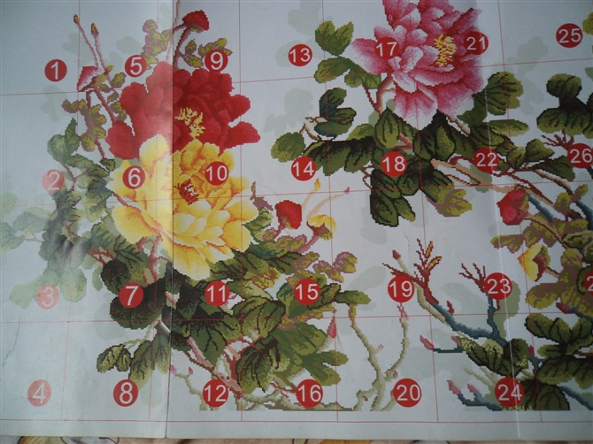
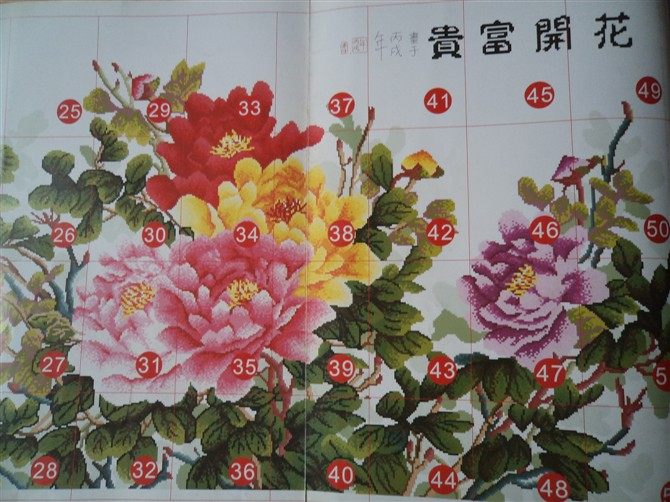
［此帖子已被 蓝天蓝 在 2011-8-17 21:20:52 编辑过］
#3 Re:十字绣 作者：小丸.net 发表时间：2011-8-17 21:20:01
本站网友江南新绿是十字锈的高手。。。。有人与他切磋下不。。。
另外楼上是用什么方法发的无字真贴。。。
#4 Re:十字绣 作者：蓝天蓝 发表时间：2011-8-17 21:23:38
是为了占2楼，没有回复不能直接上传图片，就发了无字贴了，无字贴秘籍 就是一直按空格键#5 Re:十字绣 作者：蓝色★眼泪 发表时间：2011-8-17 21:34:21
哇塞 蓝MM太厉害偶最无聊的时候
当年老同学结婚时
我花了一个月绣了韩式结婚娃娃送
后来还买了几个
就一直放着没动了
玩这个要眼力。。费时间
很喜欢别人绣的
#6 Re:十字绣 作者：梧桐风 发表时间：2011-8-17 23:07:12
不错，手工真不错啊
#7 Re:十字绣 作者：掌棋如烟 发表时间：2011-8-18 10:08:38
我有一个巴掌大的挂件,2年没搞完,不能说我是个没有耐心的人,只是觉得巴掌大的东西实在没有成就感
楼主绣的背面都这么整齐,还记得我同学绣的那东西,正面看不错,背面的线头简直惨不忍睹....
PS:江南新绿不是男同志么,居然是十字绣的高手..汗..瀑布汗.......
#8 Re:十字绣 作者：被感动的人 发表时间：2011-8-18 16:27:36
to7楼如烟：明明都是正面。
to楼主：十字绣的线紧一点好还是松一点好？我都试了一下，紧一点能看出十字来，松一点看不出十字了，因为绣品还没完成，不知道成品的话怎么样的更好一点。
#9 Re:十字绣 作者：蓝天蓝 发表时间：2011-8-18 18:14:43
不要太紧，自然也不能太松了，我建议还是不要太紧，因为洗完以后线会收缩的，绣完看不到针眼最好，这样洗了以后就比较好看#10 Re:十字绣 作者：梧桐风 发表时间：2011-8-18 18:59:08
背面发几张上来看看~据说背面是判别水平的另一个重要依据#11 Re:十字绣 作者：被感动的人 发表时间：2011-8-18 20:32:53
同意发背面照#12 Re:Re:十字绣 作者：蓝天蓝 发表时间：2011-8-18 20:39:14
发几张给你看看，不过是刚刚照的，效果不好，
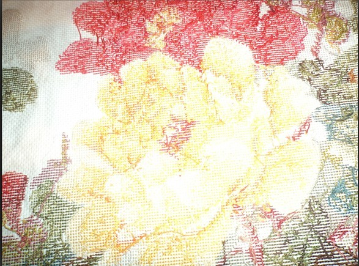
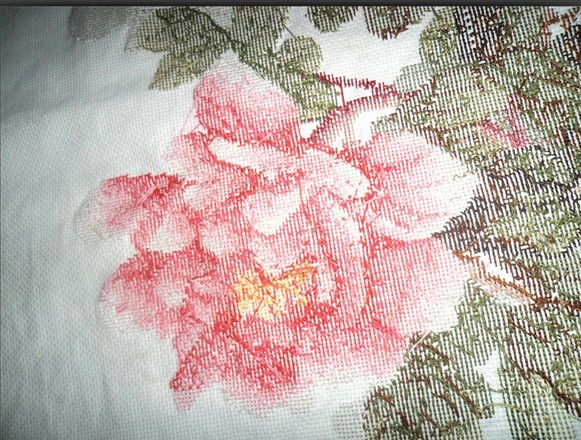
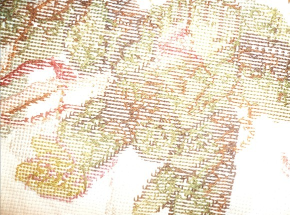
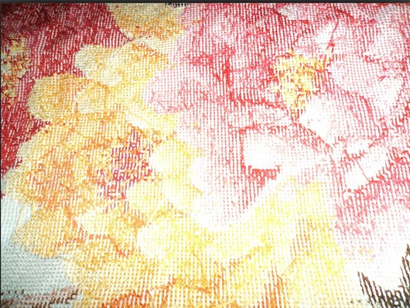
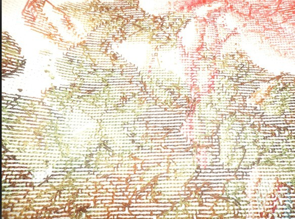
［此帖子已被 蓝天蓝 在 2011-8-18 21:19:54 编辑过］
#13 Re:十字绣 作者：江南新绿 发表时间：2011-8-18 20:40:20
绣的很强。不过那块布不算太挺括。
#14 Re:Re:十字绣 作者：蓝天蓝 发表时间：2011-8-18 20:46:01
引用：是因为没有弄好，我叠着放了
原文由 江南新绿 发表于 2011-8-18 20:40:20 :绣的很强。不过那块布不算太挺括。
#15 Re:十字绣 作者：梧桐风 发表时间：2011-8-18 21:05:40
江南新绿真的也会秀？#16 Re:Re:十字绣 作者：蓝天蓝 发表时间：2011-8-18 21:20:49
引用：当然是真的了
原文由 梧桐风 发表于 2011-8-18 21:05:40 :
江南新绿真的也会秀？
#17 Re:十字绣 作者：微微一笑 发表时间：2011-8-18 21:39:09
期待看到江南老师作品#18 Re:十字绣 作者：宁采臣 发表时间：2011-8-24 12:48:21
蓝天老师好样的哦
#19 Re:十字绣 作者：吉小鼠 发表时间：2011-8-24 23:36:52
 果然是华丽丽的高手~~~~~~
果然是华丽丽的高手~~~~~~
话说我大一的时候很迷恋十字绣 而且绣工也还不错…… 给爸爸妈妈绣过一个抱枕……
然后老妈觉得太浪费我时间，坚决不让我绣了，不过貌似我现在也的确没有这么多的时间和耐心去折腾这个东西…… 
#20 Re:Re:十字绣 作者：梧桐风 发表时间：2011-8-25 0:42:08
引用：你要像蓝天姨学习，每天织一点。手工不错，照片呢？
原文由 吉小鼠 发表于 2011-8-24 23:36:52 :
话说我大一的时候很迷恋十字绣 而且绣工也还不错…… 给爸爸妈妈绣过一个抱枕……
然后老妈觉得太浪费我时间，坚决不让我绣了，不过貌似我现在也的确没有这么多的时间和耐心去折腾这个东西……
#21 Re:十字绣 作者：吉小鼠 发表时间：2011-8-25 2:34:49
额 表示不会上传图片………囧#22 Re:十字绣 作者：梧桐风 发表时间：2011-8-25 9:38:01
点你头像上面的回复文章，用附件上传照片就可以了#23 Re:十字绣 作者：吉小鼠 发表时间：2011-8-25 11:10:39
………… 我的附件呢？［此帖子已被 吉小鼠 在 2011-8-25 11:11:08 编辑过］
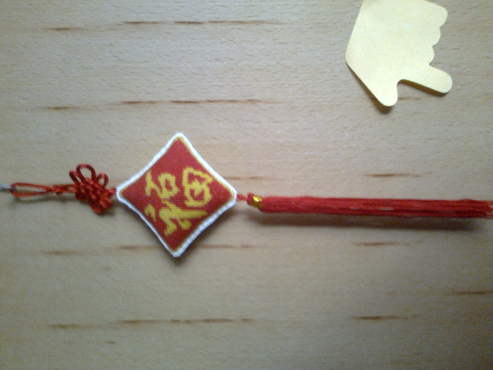
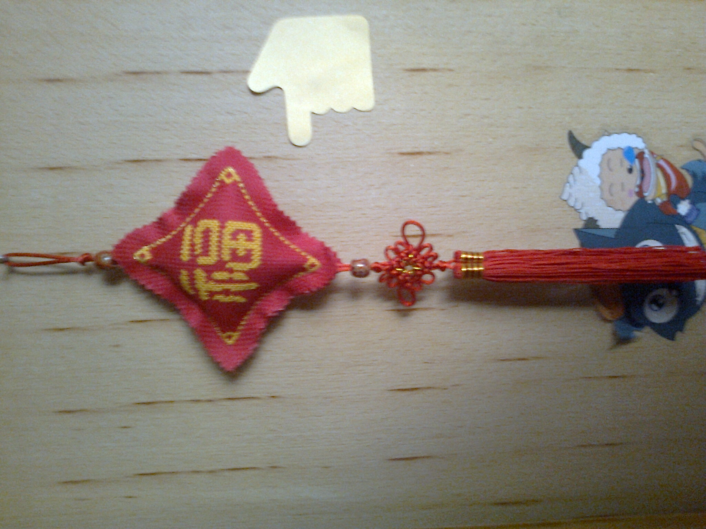
［此帖子已被 吉小鼠 在 2011-8-25 11:12:47 编辑过］
［此帖子已被 被感动的人 在 2011-8-25 13:39:22 编辑过］
#24 Re:十字绣 作者：吉小鼠 发表时间：2011-8-25 11:16:47
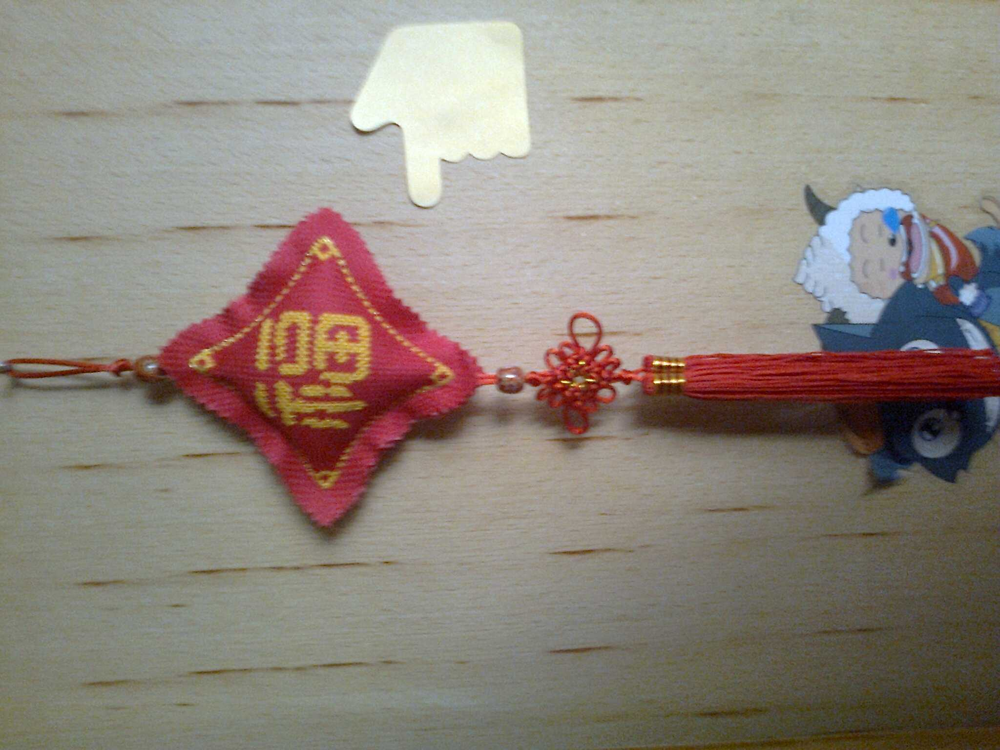［此帖子已被 被感动的人 在 2011-8-25 13:37:13 编辑过］
#25 Re:十字绣 作者：吉小鼠 发表时间：2011-8-25 11:17:21
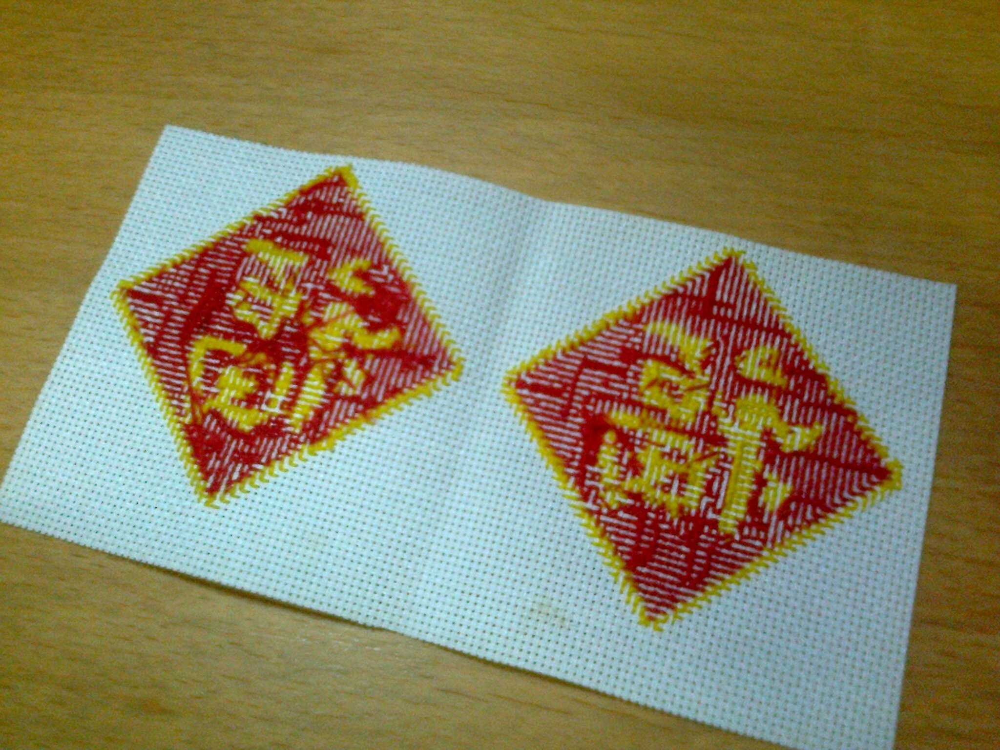［此帖子已被 被感动的人 在 2011-8-25 13:36:11 编辑过］
#26 Re:十字绣 作者：吉小鼠 发表时间：2011-8-25 11:20:15
 为什么我的图片都这么大呢……
为什么我的图片都这么大呢……
话说这是我最近绣的两个中国结………………
其实都是比较简单的…………
然后果断飘走………………
［此帖子已被 吉小鼠 在 2011-8-25 11:20:50 编辑过］
［ 梧桐风 于 2011-8-25 11:37:18 时花20金币送鲜花一朵］
#27 Re:十字绣 作者：梧桐风 发表时间：2011-8-25 11:37:41
还不错，花送你一朵#28 Re:十字绣 作者：被感动的人 发表时间：2011-8-25 13:39:49
帮你编辑了，现在能看了
#29 Re:十字绣 作者：蓝天蓝 发表时间：2011-8-25 15:05:21
绣工不错啊，高手